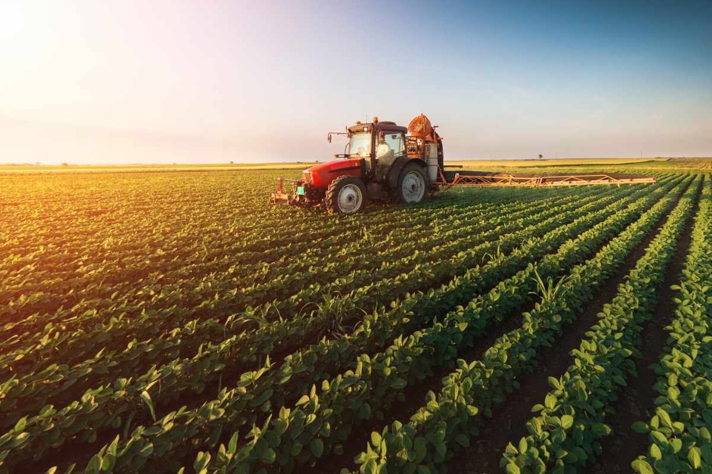

Agriculture
Agriculture is the art and science of cultivating the soil, growing crops and raising livestock. It includes the preparation of plant and animal products for people to use and their distribution to markets.
Agriculture provides most of the world’s food and fabrics. Cotton, wool, and leather are all agricultural products. Agriculture also provides wood for construction and paper products.
These products, as well as the agricultural methods used, may vary from one part of the world to another.

-
FARMING
-
Farmers have great importance in our society. They are the ones who provide us food to eat. Since every person needs proper food for their living, so they are a necessity in society.
- ----- Farming is growing crops or keeping animals by people for food and raw materials. Farming is a part of agriculture.
- ----- Agriculture started thousands of years ago, but no one knows for sure how old it is.[1] The development of farming gave rise to the Neolithic Revolution whereby people gave up nomadic hunting and became settlers in what became cities.
- ----- Many people still live by subsistence agriculture, on a small farm. They can only grow enough food to feed the farmer, his family, and his animals. The yield is the amount of food grown on a given amount of land, and it is often low. This is because subsistence farmers are generally less educated, and they have less money to buy equipment. Drought and other problems sometimes cause famines
- ----- In rich countries, farms are often fewer and larger. During the 20th century they have become more productive because farmers are able to grow better varieties of plants, use more fertilizer, use more water, and more easily control weeds and pests. Many farms also use machines, so fewer people can farm more land. There are fewer farmers in rich countries, but the farmers are able to grow more.
- ----- Farmers select plants with better yield, taste, and nutritional value. They also choose plants that can survive plant disease and drought, and are easier to harvest. Centuries of artificial selection and breeding have had enormous effects on the characteristics of crop plants. The crops produce better yield with other techniques (use of fertilizers, chemical pest control, irrigation).
- ----- This kind of intensive agriculture comes with its own set of problems. Farmers use a lot of chemical fertilizers, pesticides (chemicals that kill bugs), and herbicides (chemicals that kill weeds). These chemicals can pollute the soil or the water.